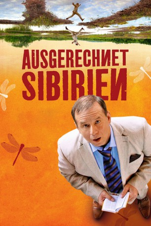

#3686 Ausgerechnet Sibirien
 
 IMDB-Wertung: 6.2 / 10
IMDB-Wertung: 6.2 / 10  Metascore: 0
Metascore: 0 
Ausgerechnet Sibirien soll es also sein. Sein Chef schickt den pedantischen Logistiker eines Versandhauses, Matthias Bleuel, in das südsibirische Verkaufsbüro, um eine neue Software einzuführen. Die Abwechslung soll ihm gelegen sein, denn er ist immer noch nicht über die Scheidung von seiner Frau hinweg. Doch schon die Hinreise erweist sich schwieriger, als erwartet, als ein Anschlussflug kommentarlos gestrichen wird.
Jahr: 2012
Dauer: 101 Minuten
FSK: 0
Land: Deutschland Studio: Majestic FilmverleihTonspuren:
Untertitel: Deutsch,
Auflösung: 1080p (1920x816) Größe: 4392 MB
Genre: Komödie
Regisseur: Ralf Huettner
Drehbuch: David H. Steinberg
Soundtrack:
Darsteller:
 Katja Riemann als Ilka
Katja Riemann als Ilka Armin Rohde als Holger
Armin Rohde als Holger- Michael Deffert als Hörspielsprecher
 Joachim Król als Matthias Bleuel
Joachim Król als Matthias Bleuel Vladimir Burlakov als Artjom Tscheremnych
Vladimir Burlakov als Artjom Tscheremnych- Michael Degen als Director Fengler
- Svetlana Tsvichenko als Natalja
- Zoya Buryak als Galina Karpowa
- Yuliya Men als Sajana
- Anna Lutseva als Svetka
- Nina Semyonova als Ljudmilla
- Aleksandr Garkushenko als Vladik
- Nesipkul Umarbekova als Olga
- Andrey Sharkov als Sergej Karpow
- Yuriy Zarubin als Ludowik
- Svetlana Smirnova als Uniformierte
- Dimitriy Podnozov als Artjom's father
- Mandzhieva Gilyana als Kiné
Datei: X:\2012(A-F)\Ausgerechnet Sibirien (2012, FSK0, 1920x816).mkv seit 20.05.2016
Festplatte: HD 2012(A-M)
 Es gibt insgesamt 102 Filme in der Gruppe '2012(A-F)'
Es gibt insgesamt 102 Filme in der Gruppe '2012(A-F)'